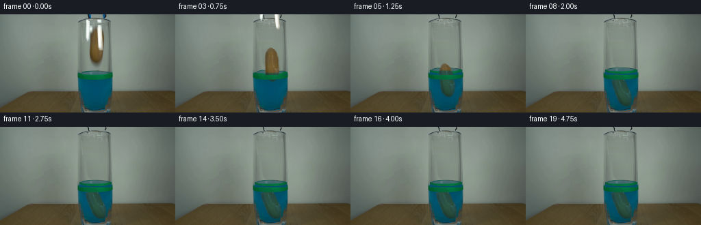
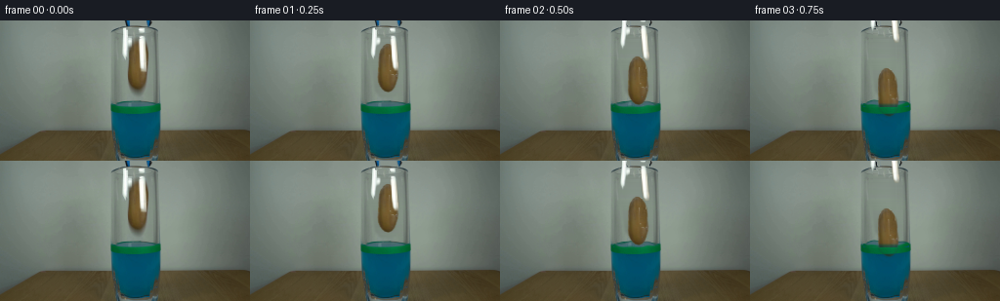
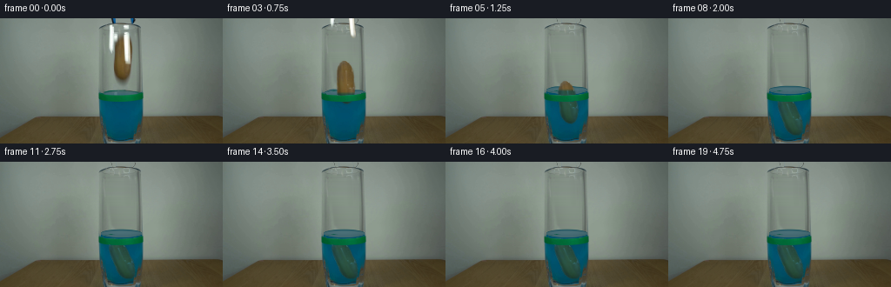
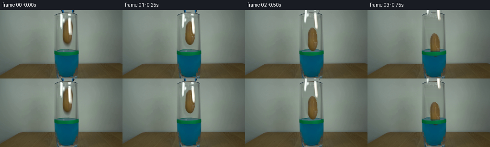
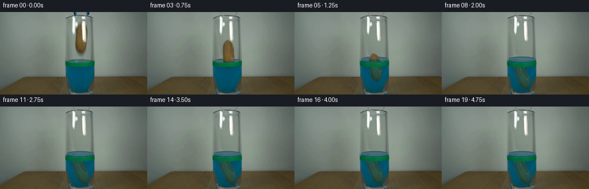
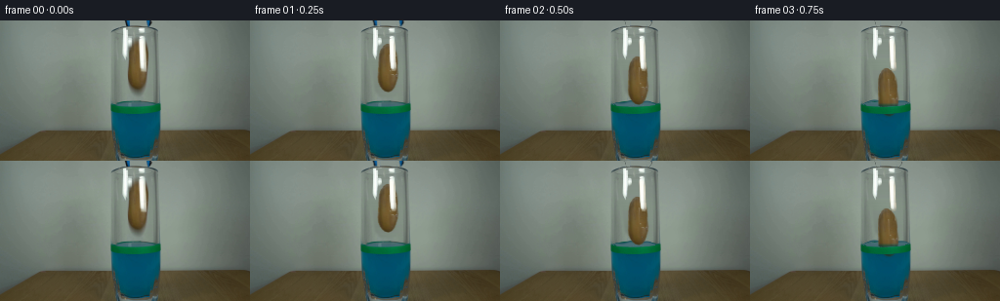

CODING AGENTS AS PIXEL WORLD MODELS
traex/GPT-6.1-Sol · 0143
点击播放 · 原生 RGB 像素
逐轮保存的候选
回放视频、检查图与代码变化。
每份候选均可单独播放。实际图片检查记录在下方工具轨迹中。
候选 01播放与检查图
点击播放 · 原生 RGB 像素


展开代码变化
--- 上一保存版本
+++ 本次保存版本
@@ -0,0 +1,220 @@
+from pathlib import Path
+import numpy as np
+from PIL import Image, ImageDraw
+from scipy.ndimage import gaussian_filter, map_coordinates, distance_transform_edt
+import artifact_io
+
+
+ROOT = Path(__file__).resolve().parent
+H, W = 144, 256
+Y, X = np.mgrid[:H, :W].astype(float)
+
+
+def smooth(a, b, x):
+ u = np.clip((x-a)/(b-a), 0, 1)
+ return u*u*(3-2*u)
+
+
+def polygon(points):
+ canvas = Image.new('L', (W*4, H*4))
+ ImageDraw.Draw(canvas).polygon([(round(x*4), round(y*4)) for x,y in points], fill=255)
+ return np.asarray(canvas.resize((W,H), Image.Resampling.LANCZOS)).astype(float)/255
+
+
+def sample(a, sx, sy):
+ if a.ndim == 2:
+ return map_coordinates(a, [sy, sx], order=1, mode='constant', cval=0)
+ return np.stack([map_coordinates(a[...,c], [sy,sx], order=1, mode='constant', cval=0) for c in range(3)], -1)
+
+
+def composite(im, col, alpha):
+ return im*(1-alpha[...,None]) + col*alpha[...,None]
+
+
+def prepare(src):
+ # The empty part of the cylinder supplies its original transmitted background.
+ clean = src.copy()
+ for y in range(14,82):
+ for x in range(123,154):
+ u=(x-121)/34
+ v=min(y,80)
+ l=src[v,121]
+ r=src[v,155]
+ c=(1-u)*l+u*r
+ c += np.array([4.0,5.0,4.0])*np.sin(np.pi*np.clip(u,0,1))
+ clean[y,x]=c
+ # A smooth locally interpolated restoration, feathered into the actual glass.
+ restore = polygon([(124,14),(135,14),(138,17),(147,17),(153,22),
+ (154,58),(152,74),(148,79),(134,79),(128,73),
+ (125,49),(123,40)])
+ restore=gaussian_filter(restore,1.0)
+ clean = composite(src, clean, restore)
+
+ # Extract the two real jaws. Bright stainless highlights and their dark/blue
+ # shafts are retained as photographic sprites, not replaced by flat drawings.
+ left_region=polygon([(124,7),(128,6),(133,8),(135,23),(133,31),
+ (131,39),(128,42),(124,38),(123,27)])
+ right_region=polygon([(140,7),(146,6),(150,8),(151,18),(151,39),
+ (152,49),(151,55),(145,55),(141,48),(141,19)])
+ bright=smooth(138,210,src[...,0])
+ lm=left_region*bright
+ rm=right_region*bright
+ shafts=((Y<10)&(((X>=126)&(X<=135))|((X>=148)&(X<=156))))
+ blue=smooth(7,28,src[...,2]-src[...,0])*smooth(7,28,src[...,1]-src[...,0])
+ lm=np.maximum(lm,blue*shafts*(X<140))
+ rm=np.maximum(rm,blue*shafts*(X>140))
+ # Remove the jaw reflections below the rim; preserve the ellipse of the rim.
+ for mask, a,b in [(lm,123,136),(rm,139,153)]:
+ for y in range(7,58):
+ for x in range(a,b+1):
+ u=(x-a)/(b-a)
+ target=(1-u)*clean[y,a-1]+u*clean[y,b+1]
+ clean[y,x]=clean[y,x]*(1-mask[y,x])+target*mask[y,x]
+ for y in range(0,9):
+ for x in range(125,157):
+ m=max(lm[y,x],rm[y,x])
+ if m:
+ if y<6:
+ replacement=src[y,124]*(156-x)/32+src[y,156]*(x-124)/32
+ else:
+ replacement=src[y,min(160,max(116,x-8 if x<140 else x+8))]
+ clean[y,x]=clean[y,x]*(1-m)+replacement*m
+
+ # Potato contour follows the photographed, irregular tuber rather than an ellipse.
+ pm=polygon([(140,20.7),(143,21.2),(146,23.8),(148.5,27.8),
+ (150.1,32),(150.7,39),(150.5,45.5),(151.2,51.5),
+ (150.4,57),(149.0,62),(147.1,66.5),(144.8,69.1),
+ (141.4,70.6),(137.5,69.5),(134.7,67.1),(132.6,63.8),
+ (131,59.8),(130.6,55),(131,49),(131.2,42),(131.4,36),
+ (132.2,31),(133.5,27),(136,23.5),(138,21.7)])
+ tex=src.copy()
+ rng=np.random.default_rng(143)
+ noise=gaussian_filter(rng.normal(0,1,(H,W)),0.45)
+ # Infill only the narrow portions hidden by the right jaw with potato skin
+ # sampled from the unobstructed center, preserving its mottling and side shading.
+ for y in range(19,73):
+ yy=np.clip(y,25,68)
+ for x in range(129,153):
+ if pm[y,x]<.001:
+ continue
+ col=src[y,x]
+ brown=col[0]>col[1]+7 and col[1]>col[2]+11
+ if not brown or rm[y,x]>.02:
+ xx=int(np.clip(139+(x-144)*.35,135,142))
+ original=src[yy,xx]
+ shade=1-.022*max(x-143,0)
+ tex[y,x]=original*shade+noise[y,x]*2.2
+ # Derive unpremultiplied sprite colors so antialiased edges are not gray fringes.
+ for y in range(20,72):
+ for x in range(129,153):
+ a=pm[y,x]
+ if 0.01<a<.95:
+ tex[y,x]=tex[y,x]*a + src[min(max(y,28),61),138]*(1-a)
+ return clean, pm, tex, lm, rm
+
+
+def surface_layer(frame, clean, level, t):
+ if level<=0:
+ return frame
+ cx, rx, ry=139.0,24.0,4.7
+ u=(X-cx)/rx
+ inside=np.clip(1-u*u,0,1)
+ root=np.sqrt(inside)
+ cy=87-level
+ damp=np.exp(-max(t-.45,0)/.72)
+ wave=.7*damp*np.sin((X-139)*.37-t*12)
+ top=cy-ry*root+wave
+ bot=cy+ry*root+wave
+ # Resample the existing blue meniscus upwards. The fixed green tape is a
+ # foreground layer and never follows the changing liquid surface.
+ surface=sample(clean,X,Y+level-wave)
+ plane=(smooth(top-.6,top+.6,Y)*(1-smooth(bot-.6,bot+.6,Y))
+ * (1-smooth(23.3,24.1,np.abs(X-cx))) * (1-smooth(87,89,Y)))
+ frame=composite(frame,surface,plane)
+ body=smooth(bot-.5,bot+.5,Y)*(1-smooth(87.5,89,Y))*(1-smooth(23.3,24.1,np.abs(X-cx)))
+ bodycol=np.zeros_like(frame)+np.array([2,80,105])
+ frame=composite(frame,bodycol,body)
+ if t<2.2:
+ for k in range(2):
+ radius=4+(t-.42)*16-k*6
+ if 2<radius<25:
+ rr=np.sqrt(((X-141)/radius)**2+((Y-cy)/(radius*.19))**2)
+ ripple=np.exp(-((rr-1)*radius/.42)**2)*.18*damp*plane
+ frame=composite(frame,np.zeros_like(frame)+[115,150,150],ripple)
+ return frame
+
+
+def make_frames():
+ first=np.array(Image.open(ROOT/'first_frame.png').convert('RGB'))
+ src=first.astype(float)
+ clean,pm,tex,lm,rm=prepare(src)
+ frames=[first.copy()]
+ # Depth-dependent fall: gravity accelerates the release, then fluid drag
+ # limits speed; the potato makes soft contact with the glass bottom.
+ centers=np.array([46,49,62,74,86,97,106.5,110.4,111.9,112.3,
+ 112.4,112.4,112.4,112.4,112.4,112.4,112.4,112.4,112.4,112.4])
+ angles=np.array([0,0,1.5,3.8,6,9,12,18,22,23.8,24.5,24.4,24.2,24.2,
+ 24.2,24.2,24.2,24.2,24.2,24.2])
+ for i in range(1,20):
+ t=i/4
+ cy=centers[i]
+ angle=np.deg2rad(angles[i])
+ cx=141-.7*smooth(.6,1.8,t)
+ # Fraction immersed, and displacement of the free surface.
+ immersion=smooth(82,126,cy+24)
+ level=5.1*immersion
+ frame=surface_layer(clean.copy(),clean,level,t)
+ # Reverse-map the full photographic potato through a subtle cylindrical
+ # magnification once it crosses the free surface.
+ water_y=87-level
+ wet=smooth(water_y-2,water_y+2,Y)
+ scale=1+wet*.045
+ dx=(X-cx)/scale
+ dy=Y-cy
+ sx=140.7+np.cos(angle)*dx-np.sin(angle)*dy
+ sy=46+np.sin(angle)*dx+np.cos(angle)*dy
+ pa=sample(pm,sx,sy)
+ potato=sample(tex,sx,sy)
+ watercol=potato*np.array([.43,.87,1.03])+np.array([0,3,11])
+ watercol=watercol*.87+np.array([1,80,105])*.13
+ potato=potato*(1-wet[...,None])+watercol*wet[...,None]
+ # Slightly soften the submerged outline without losing the skin texture.
+ blur=gaussian_filter(potato,(.3,.3,0))
+ potato=potato*(1-.3*wet[...,None])+blur*(.3*wet[...,None])
+ # Soft transmitted shadow on the rear interior and at contact.
+ shadow=gaussian_filter(pa,1.25)*(.09+.035*wet)
+ shadow*=smooth(12,16,Y)*(1-smooth(133,136,Y))
+ frame*=1-shadow[...,None]
+ frame=composite(frame,potato,pa)
+ # Green level marking and the lower thick glass rim sit in front.
+ band=smooth(87.8,89.0,Y)*(1-smooth(94.5,96,Y))
+ band*=smooth(112,116,X)*(1-smooth(162,165,X))
+ band*=.97
+ frame=composite(frame,src,band*pa)
+ bottom=smooth(132.5,135.5,Y)*smooth(115,119,X)*(1-smooth(162,166,X))
+ frame=composite(frame,src,bottom*pa)
+ # Open the jaw tips before lifting, with each jaw pivoting at its upper
+ # end. No camera movement or newly invented objects are introduced.
+ opening=3.2*smooth(0,.35,t)
+ lift=57*smooth(.2,1.28,t)
+ for m,side in [(lm,-1),(rm,1)]:
+ shift=side*opening*np.clip((Y+lift+10)/60,0,1)
+ tx=X-shift
+ ty=Y+lift
+ ma=sample(m,tx,ty)
+ sprite=sample(src,tx,ty)
+ frame=composite(frame,sprite,ma)
+ # A few short-lived in-glass disturbances rather than a large splash.
+ if .4<t<1.15:
+ amp=np.exp(-(t-.48)/.22)
+ for x0,y0 in [(130,80.5),(151,79),(145,77.8)]:
+ xx=x0+(x0-141)*(t-.5)*1.5
+ yy=y0+12*(t-.5)**2
+ bead=np.exp(-((X-xx)/.45)**2-((Y-yy)/.6)**2)*.32*amp
+ frame=composite(frame,np.zeros_like(frame)+[81,135,143],bead)
+ frames.append(np.clip(np.rint(frame),0,255).astype(np.uint8))
+ return np.stack(frames)
+
+
+if __name__=='__main__':
+ artifact_io.save(make_frames(),ROOT)
候选 02播放与检查图
点击播放 · 原生 RGB 像素


展开代码变化
--- 上一保存版本
+++ 本次保存版本
@@ -61,8 +61,10 @@
rm=right_region*bright
shafts=((Y<10)&(((X>=126)&(X<=135))|((X>=148)&(X<=156))))
blue=smooth(7,28,src[...,2]-src[...,0])*smooth(7,28,src[...,1]-src[...,0])
- lm=np.maximum(lm,blue*shafts*(X<140))
- rm=np.maximum(rm,blue*shafts*(X>140))
+ dark=smooth(102,38,src[...,0])*(Y<6)
+ shaft_alpha=np.maximum(blue,dark)
+ lm=np.maximum(lm,shaft_alpha*shafts*(X<140))
+ rm=np.maximum(rm,shaft_alpha*shafts*(X>140))
# Remove the jaw reflections below the rim; preserve the ellipse of the rim.
for mask, a,b in [(lm,123,136),(rm,139,153)]:
for y in range(7,58):
@@ -77,7 +79,7 @@
if y<6:
replacement=src[y,124]*(156-x)/32+src[y,156]*(x-124)/32
else:
- replacement=src[y,min(160,max(116,x-8 if x<140 else x+8))]
+ replacement=src[y,136]*.5+src[y,140]*.5
clean[y,x]=clean[y,x]*(1-m)+replacement*m
# Potato contour follows the photographed, irregular tuber rather than an ellipse.
@@ -127,7 +129,12 @@
bot=cy+ry*root+wave
# Resample the existing blue meniscus upwards. The fixed green tape is a
# foreground layer and never follows the changing liquid surface.
- surface=sample(clean,X,Y+level-wave)
+ eta=np.clip((Y-top)/(bot-top+.001),0,1)
+ surface=np.zeros_like(frame)
+ surface[:]=[67,104,112]
+ surface+=(np.exp(-((eta-.39)/.27)**2)*7)[...,None]
+ surface-=np.exp(-(eta/.15)**2)[...,None]*np.array([40,23,18])
+ surface-=((1-inside)*9)[...,None]
plane=(smooth(top-.6,top+.6,Y)*(1-smooth(bot-.6,bot+.6,Y))
* (1-smooth(23.3,24.1,np.abs(X-cx))) * (1-smooth(87,89,Y)))
frame=composite(frame,surface,plane)
@@ -187,10 +194,10 @@
frame*=1-shadow[...,None]
frame=composite(frame,potato,pa)
# Green level marking and the lower thick glass rim sit in front.
- band=smooth(87.8,89.0,Y)*(1-smooth(94.5,96,Y))
- band*=smooth(112,116,X)*(1-smooth(162,165,X))
- band*=.97
- frame=composite(frame,src,band*pa)
+ band=smooth(8,21,src[...,1]-src[...,2])
+ band*=smooth(30,60,src[...,1]-src[...,0])
+ band*=((Y>82)&(Y<96))
+ frame=composite(frame,src,band)
bottom=smooth(132.5,135.5,Y)*smooth(115,119,X)*(1-smooth(162,166,X))
frame=composite(frame,src,bottom*pa)
# Open the jaw tips before lifting, with each jaw pivoting at its upper
候选 03播放与检查图
点击播放 · 原生 RGB 像素


展开代码变化
--- 上一保存版本
+++ 本次保存版本
@@ -50,8 +50,8 @@
restore=gaussian_filter(restore,1.0)
clean = composite(src, clean, restore)
- # Extract the two real jaws. Bright stainless highlights and their dark/blue
- # shafts are retained as photographic sprites, not replaced by flat drawings.
+ # Separate the fixed glass highlights from the blue-black upper tool.
+ # The highlights are foreground reflections, also retained photographically.
left_region=polygon([(124,7),(128,6),(133,8),(135,23),(133,31),
(131,39),(128,42),(124,38),(123,27)])
right_region=polygon([(140,7),(146,6),(150,8),(151,18),(151,39),
@@ -112,7 +112,10 @@
a=pm[y,x]
if 0.01<a<.95:
tex[y,x]=tex[y,x]*a + src[min(max(y,28),61),138]*(1-a)
- return clean, pm, tex, lm, rm
+ glass=np.maximum(lm,rm)*(Y>=7)
+ lm=lm*(Y<7)
+ rm=rm*(Y<7)
+ return clean, pm, tex, lm, rm, glass
def surface_layer(frame, clean, level, t):
@@ -154,7 +157,7 @@
def make_frames():
first=np.array(Image.open(ROOT/'first_frame.png').convert('RGB'))
src=first.astype(float)
- clean,pm,tex,lm,rm=prepare(src)
+ clean,pm,tex,lm,rm,glass=prepare(src)
frames=[first.copy()]
# Depth-dependent fall: gravity accelerates the release, then fluid drag
# limits speed; the potato makes soft contact with the glass bottom.
@@ -200,12 +203,13 @@
frame=composite(frame,src,band)
bottom=smooth(132.5,135.5,Y)*smooth(115,119,X)*(1-smooth(162,166,X))
frame=composite(frame,src,bottom*pa)
+ frame=composite(frame,src,glass)
# Open the jaw tips before lifting, with each jaw pivoting at its upper
# end. No camera movement or newly invented objects are introduced.
opening=3.2*smooth(0,.35,t)
- lift=57*smooth(.2,1.28,t)
+ lift=14*smooth(.18,.9,t)
for m,side in [(lm,-1),(rm,1)]:
- shift=side*opening*np.clip((Y+lift+10)/60,0,1)
+ shift=side*opening
tx=X-shift
ty=Y+lift
ma=sample(m,tx,ty)
可观测工具轨迹
实际执行的命令与返回图片。
命令 1exit 0
/bin/bash -lc 'ls -la && cat prompt.txt && cat GENERATION_RULES.md'
命令 2exit 0
/bin/bash -lc "cat artifact_io.py && python - <<'PY'
from PIL import Image
import numpy as np
im=np.array(Image.open('first_frame.png'));print(im.shape)
for y in range(0,144,4):
s=''
for x in range(0,256,4):
r,g,b=im[y:y+4,x:x+4,:3].mean((0,1))
if max(r,g,b)-min(r,g,b)<13:c=' ' if r>210 else '.' if r>160 else ':' if r>100 else '#' if r>45 else '@'
elif b>r*1.2 and b>g*1.1:c='B' if b>100 else 'b'
elif g>r*1.13 and g>b*1.1:c='G'
elif r>b*1.15 and g>b*1.13:c='O' if r>130 else 'o'
elif r>g*1.2 and r>b*1.15:c='R'
else:c='.'
s+=c
print(f'{y:3d} '+s)
PY"命令 3exit 0
/bin/bash -lc "python - <<'PY'
import numpy as np
from PIL import Image
from scipy.cluster.vq import kmeans2
im=np.array(Image.open('first_frame.png'))[:,:,:3]
rng=np.random.default_rng(4)
cs,_=kmeans2(im.reshape(-1,3).astype(float)[::2],16,minit='++',seed=4)
idx=np.argmin(((im[:,:,None,:]-cs[None,None])**2).sum(-1),-1)
for i,c in enumerate(cs):print(chr(65+i),np.round(c).astype(int))
for y in range(0,144,2):
ss=''.join(chr(65+int(np.bincount(idx[y:y+2,x:x+2].ravel(),minlength=16).argmax())) for x in range(90,181,1))
print(f'{y:3} {ss}')
np.save('.tmp/colors.npy',cs)
PY"命令 4exit 0
/bin/bash -lc "python - <<'PY'
from PIL import Image
import numpy as np
im=np.array(Image.open('first_frame.png'))
for y in range(0,81):
s=''
for x in range(113,172):
r,g,b=im[y,x,:3].astype(float)
if r>200 and g>200 and b>190:c='W'
elif r>165 and g>168 and b>155:c='w'
elif r>g*1.1 and g>b*1.13:c='N' if r>100 else 'a' if r<78 else 'o'
elif b>r*1.3 and g>r*1.3:c='D'
elif max(r,g,b)-min(r,g,b)<26:c=' ' if r>130 else '.' if r>105 else ':' if r>80 else '#'
else:c='?'
s+=c
print(f'{y:2} {s}')
print('\\nSamples')
for y in [0,4,8,12,16,20,24,28,32,36,40,44,48,52,56,60,64,68,72,76,80,84,88,94]:
print('y',y,' '.join(f'{x}:{tuple(im[y,x,:3])}' for x in range(120,164,3)))
PY"命令 5exit 0
/bin/bash -lc "python - <<'PY'
from PIL import Image
import numpy as np
im=np.array(Image.open('first_frame.png'))
for y in range(0,57):
print(f'{y:2}', ' '.join(f'{x}:{im[y,x,0]:03d},{im[y,x,1]:03d},{im[y,x,2]:03d}' for x in [124,125,126,127,128,129,130,131,132,133,142,143,144,145,146,147,148,149]))
PY"命令 6exit 0
/bin/bash -lc "python - <<'PY'
from PIL import Image
import numpy as np
im=np.array(Image.open('first_frame.png')).astype(float)
for y in [5,6,7,8,9,13,20,30,40,50,60,70,80,82,83,84,85,86,87,90,92,96,100,110,120,130,134]:
print(y, ' '.join('%d:(%d,%d,%d)'%(x,*im[y,x,:3]) for x in [111,114,118,121,124,128,132,136,140,144,148,152,156,160,164,168,172]))
PY"命令 7exit 0
/bin/bash -lc "python - <<'PY' import importlib.util for m in ['numpy','scipy','PIL','cv2']: print(m,importlib.util.find_spec(m) is not None) PY"
命令 8exit 0
/bin/bash -lc "python generate.py && python - <<'PY'
import generate as g
from PIL import Image
import numpy as np
s=np.array(Image.open('first_frame.png')).astype(float)
c,p,tex,l,r=g.prepare(s)
Image.fromarray(np.uint8(np.clip(c,0,255))).save('.tmp/clean.png')
Image.fromarray(np.uint8(np.clip(tex,0,255))).save('.tmp/texture.png')
for name,a in [('clean',c),('frame1',np.array(Image.open('frames/01.png')).astype(float)),('frame4',np.array(Image.open('frames/04.png')).astype(float)),('frame9',np.array(Image.open('frames/09.png')).astype(float))]:
print('\\n',name)
for y in range(0,144,2):
z=''
for x in range(111,169):
R,G,B=a[y,x]
if R>200 and G>200 and B>190:k='W'
elif R>160 and G>160 and B>150:k='w'
elif R>G+7 and G>B+10:k='N' if R>100 else 'o' if R>77 else 'a'
elif G>R+35 and G>B+20:k='G'
elif B>R+35 and G>R+30:k='B'
elif max(R,G,B)-min(R,G,B)<26:k=' ' if R>130 else '.' if R>105 else ':' if R>80 else '#'
else:k='?'
z+=k
print(f'{y:3} {z}')
print('alpha area',p.sum(),l.sum(),r.sum())
PY"命令 9exit 0
/bin/bash -lc "python - <<'PY'
import generate as g
from PIL import Image
import numpy as np
s=np.array(Image.open('first_frame.png')).astype(float)
c,p,t,l,r=g.prepare(s)
for y in [0,4,8,14,20,30,40,50,60,74]:
print('\\n',y,[(x,np.round(c[y,x]).astype(int).tolist()) for x in range(124,153,2)])
a=np.array(Image.open('frames/09.png')); print('potato final')
for y in [96,100,110,120,125,130]:print(y,[(x,a[y,x].tolist()) for x in [135,140,145,150]])
PY"命令 10exit 0
/bin/bash -lc "python generate.py && python - <<'PY'
import numpy as np
from PIL import Image
import generate as g
first=np.array(Image.open('first_frame.png').convert('RGB'))
s=np.load('pixels.npz')['pixels']
p=s.transpose(2,0,1)
rgb=np.stack([(p>>16)&255,(p>>8)&255,p&255],-1).astype('uint8')
assert rgb.shape==(20,144,256,3)
assert np.array_equal(rgb[0],first)
print('frame specification and exact first frame: OK')
for i in [1,2,4,8,19]:
d=np.abs(rgb[i].astype(float)-first.astype(float)); print(i,'changed pixels',np.count_nonzero(d.max(-1)), 'outside setup',int(d[:,:110].max()),int(d[:,177:].max()))
a=rgb[19]
for y in [0,2,4,6,8,10,78,80,82,84,86,88,90,92,94]:
print(y,' '.join(f'{x}:{tuple(a[y,x])}' for x in [127,129,131,140,149,151,153]))
PY"命令 11exit 0
/bin/bash -lc "python generate.py && python - <<'PY'
from PIL import Image
import numpy as np
for i in [0,1,3,6,19]:
a=np.array(Image.open(f'frames/{i:02}.png'))
print('\\nFRAME',i)
for y in range(0,138,4):
z=''
for x in range(116,164):
R,G,B=a[y,x].astype(float)
if R>200 and G>200 and B>190:k='W'
elif R>160 and G>160 and B>150:k='w'
elif R>G+7 and G>B+10:k='N' if R>100 else 'o' if R>77 else 'a'
elif G>R+35 and G>B+20:k='G'
elif B>R+35 and G>R+30:k='B'
elif max(R,G,B)-min(R,G,B)<26:k=' ' if R>130 else '.' if R>105 else ':' if R>80 else '#'
else:k='?'
z+=k
print(f'{y:3} {z}')
assert np.array_equal(np.array(Image.open('frames/00.png')),np.array(Image.open('first_frame.png')))
PY"保存候选 3 份；完成命令 11 次；可验证图片返回 0 张。原始 API 响应与完整日志保留在本地。